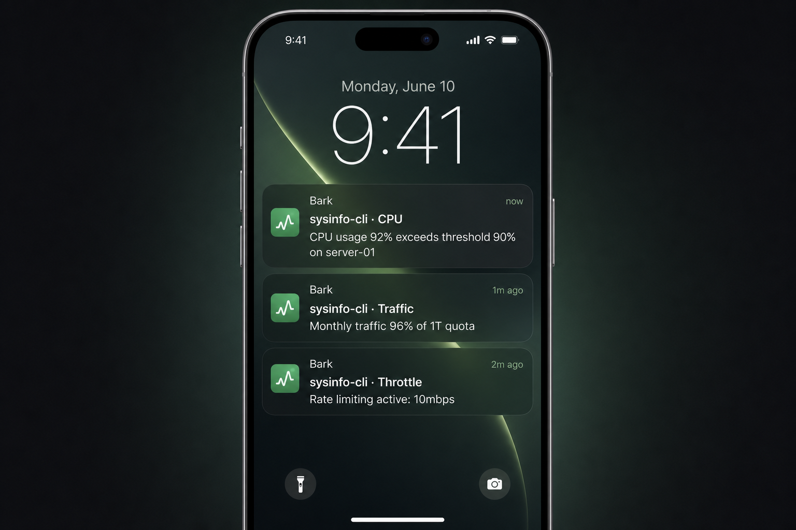

Plain Bash, multi-distro Linux. Status on login, live sysinfo monitor, traffic + tc throttling + NAT, and Bark push alerts.
$ sysinfo ================================================================ System Information Dashboard - 2026-06-29 17:49:12 ================================================================ Core Information CPU : Intel(R) Core(TM) i5-9600 @ 3.10GHz (6 core(s)) IPv4 : 10.103.241.153 NAT : 8080->80 9000->3000 Uptime : 1 week, 4 days, 4 hours Resources Load : 71.3% Procs : 3725 Memory : 19Gi / 31Gi (62%) Network Down : 55.5 KB/s Up : 0 KB/s Usage : [] 48% Throttle : Idle (below threshold) Disk / 162G 90G 59% [] ================================================================

SSH login shows a snapshot; run sysinfo for live refresh. Plain Bash, no daemons.
One-shot panel on SSH login — bash and zsh, no command needed.
Run sysinfo anytime — in-place refresh, no flicker.
Real-time up/down speed.
Monthly accounting + auto tc limiting.
Display & configure NAT mappings.
Modular Bark alerts for 5 rule types.
Chinese / English UI, config switchable.
One readable config, applied with -c / -r.
Just yq + iproute. Installer auto-detects your package manager.
Pick any method. The installer pulls dependencies and sets up the login banner.
# 1) One-liner (baixiaosheng.de)
bash <(curl -sSL baixiaosheng.de/sysinfo)
# 2) Via GitHub
curl -sSL https://raw.githubusercontent.com/baixiaoshengofficial/sysinfo-cli/main/install.sh | bash
# 3) Clone & install git clone https://github.com/baixiaoshengofficial/sysinfo-cli.git cd sysinfo-cli && ./install.sh # --lang zh|en, --overwrite-config
A modular alerting layer (Bark today). Edge-triggered with cooldown, so no spam.
mode: upload|download|bothpaths: [...]# test the channel sysinfo --notify-test # evaluate rules (cron) sysinfo --notify-check # */5 * * * * /usr/local/bin/sysinfo --notify-check
Bark push on iPhone — CPU, traffic, throttle and more
/etc/sysinfo/config.yaml — edit, then apply with sudo sysinfo -r.
traffic: enabled: true limit: "1T" # 1T, 500G, 100M, UNLIMITED reset_day: 1 mode: "both" # upload | download | both throttle: enabled: true threshold: 95 # % rate: "10mbps" display: language: "auto" # auto | zh | en show_traffic: true show_nat: true show_throttle: true notify: enabled: false bark: { url: "https://api.day.app", key: "" } cooldown: 1800 rules: cpu: { enabled: false, threshold: 90 } net: { enabled: false, threshold: 90 } nic: { enabled: false, threshold: 80, mode: both, upload_rate: 0, download_rate: 0 } throttle: { enabled: false } disk: { enabled: false, threshold: 90, paths: [] }